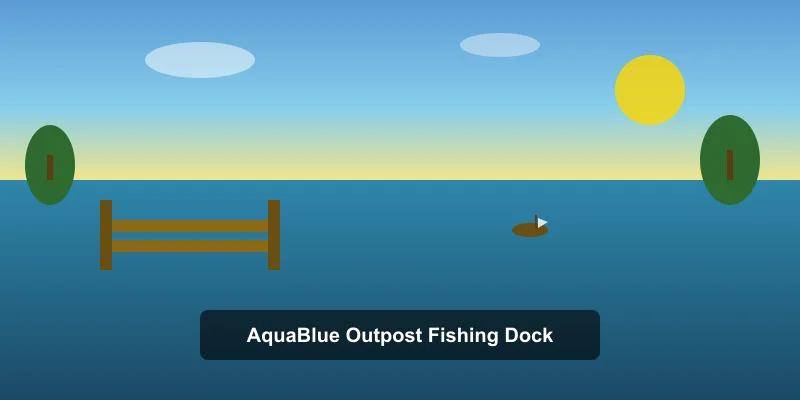
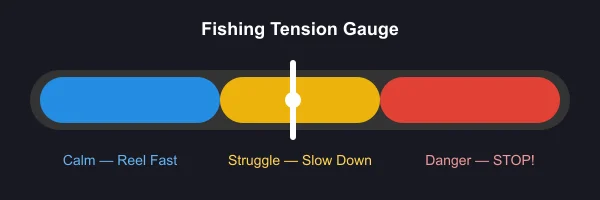
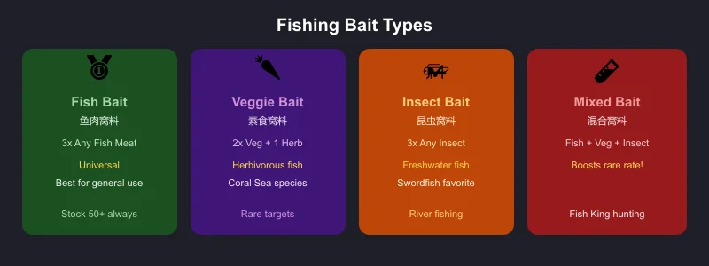
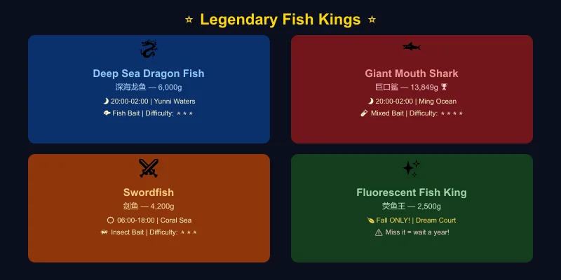
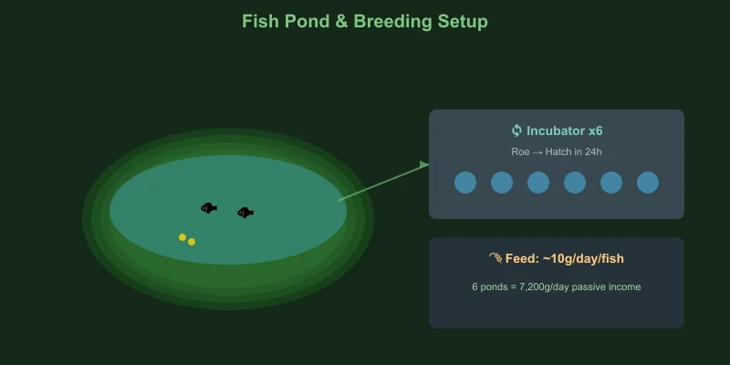
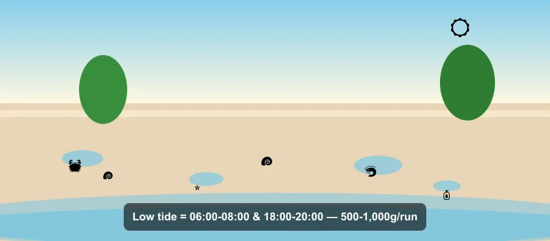
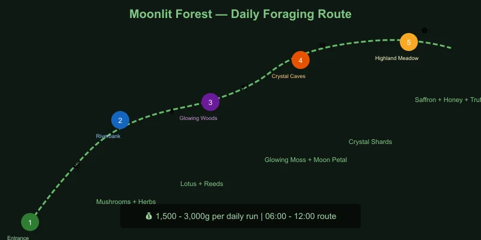
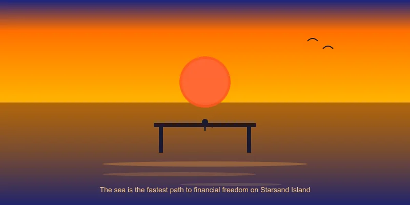

🎣 Starsand Island Complete Fishing & Gathering Guide
Game version: Early Access (Feb 12, 2026 launch) | Focus: Fishing, Foraging & Ocean Gathering
I've spent over 50 hours fishing every corner of Starsand Island — from the AquaBlue pier to the deep waters of Yunni — and I can tell you without hesitation: fishing is the fastest route to financial freedom on this island. It uses less stamina than mining or logging, and a single Fish King sells for over 13,000 gold. But the system runs deep: with 100+ fish species, 4 legendary Fish Kings, a fish breeding/pond system, and a multi-stage fishing profession quest chain, there is a lot to learn.
This guide covers everything I've learned along the way — from casting your first line to breeding legendary fish for passive income.
Data sourced from in-game testing, Bilibili Wiki, and community research. Prices in in-game gold. Verified for EA version 0.4.2.
📋 Table of Contents
- Getting Started: How to Unlock Fishing
- Fishing Mechanics & Controls
- Rod Upgrades & Progression
- Bait Guide — What to Use & When
- Seasonal Fish Tables
- Legendary Fish Kings — Location & Strategy
- Fish Pond & Breeding Guide
- Beach Foraging & Tidepool Collecting
- Forest Foraging & Gathering Routes
- Fishing Profession — Quests & Perks
- Profit Analysis — Best Fish for Money
- Pro Tips & Common Mistakes
Getting Started: How to Unlock Fishing

Fishing is not available from day one — you need to unlock it through a short quest chain:
Unlock Steps
| Step | What to Do | Requirements |
|---|---|---|
| 1 | Repair the bridge to AquaBlue Outpost (碧蓝哨站) | 15 Stone + 15 Softwood |
| 2 | Talk to Delphin (德尔芬) — the fishing mentor | — |
| 3 | Accept the tutorial quest "A Fisher's First Catch" | — |
| 4 | Craft a basic fishing rod at the workbench | 10 Softwood + 5 Fiber |
| 5 | Catch your first fish near the Outpost pier | Any fish in the marked area |
| 6 | Report back to Delphin to unlock the Fishing skill tab | — |
Tip: Unlock fishing as early as possible — even before investing in farm upgrades. A single afternoon of fishing can fund your first backpack upgrade and tool enhancement.
Where to Fish
Starsand Island has 5 main fishing zones:
| Zone | Type | Access | Best For |
|---|---|---|---|
| AquaBlue Outpost (碧蓝哨站) | Pier / Coastal | Unlocked via bridge repair | Early-game, basic fish |
| River Systems (河流) | Freshwater | Always open | Seasonal river fish, Arapaima |
| Coral Sea (珊瑚海) | Ocean | Rent boat from port | Swordfish, Napoleon fish, daytime fish |
| Ming Ocean (明洋海域) | Deep Ocean | Rent boat from port | Tuna, Sunfish, nighttime fish kings |
| Yunni Waters (云霓海域) | Deep Ocean | Rent boat from port | Deep-sea species, rare fish kings |
🚤 Boat Access: After repairing the harbor (Port Reconstruction quest — 15 Stone + 15 Softwood), you can rent a yacht for 150g/hour or hire a parrot boat to reach deep-sea fishing grounds.
Fishing Mechanics & Controls
The fishing mini-game is tension-based, similar to Animal Crossing but with a visual twist:
How It Works
- Cast your line near a fish shadow (ripple/hitbox in the water)
- Wait for a bite — the float dips underwater and splashes
- Reel in using the tension gauge:
- 🔵 Blue zone — fish is calm, reel in quickly
- 🟡 Yellow zone — fish is struggling, slow down or pause
- 🔴 Red zone — fish is fighting hard, STOP reeling or line breaks
- Land the catch — keep tension in the blue/yellow zone until the fish is pulled in

Key Mechanics
| Mechanic | Detail |
|---|---|
| Stamina cost | 10 stamina per cast |
| Cast range | Determined by rod tier — longer range = access to deeper fish |
| Fish shadows | Larger shadows = bigger fish (often higher rarity) |
| Weather effect | Rain increases rare fish spawn rates by ~30% |
| Time effect | Night (20:00–02:00) unlocks exclusive nocturnal species |
| Bait consumption | 1 bait per catch (when bait is equipped) |
Beginner tip: Do not try to force the reel when the gauge hits red. Just let go — the line cools down fast, and you waste less stamina than fighting a losing battle.
Rod Upgrades & Progression
| Rod | Cost | Materials | Cast Range | Bait Slots | Unlock |
|---|---|---|---|---|---|
| Basic Rod (基础鱼竿) | — | 10 Softwood + 5 Fiber | Short | 0 | Tutorial quest |
| Fiber Rod (纤维鱼竿) | 500g | 15 Fiber + 5 Copper Ore | Medium | 1 | Fishing Lv 2 |
| Bamboo Rod (竹制鱼竿) | 1,200g | 20 Bamboo + 5 Iron Ore | Long | 1 | Fishing Lv 5 |
| Carbon Rod (碳素鱼竿) | 3,500g | 10 Carbon Fiber + 5 Gold Ore | Very Long | 2 | Fishing Lv 10 |
| Mythic Rod (传说鱼竿) | 8,000g | 5 Rainbow Ore + 3 Moonlight Stone | Maximum | 2 | Fishing Lv 15 + quest |
Recommended upgrade path: Skip the Fiber Rod if you can save up for Bamboo directly. The Carbon Rod is the first major power spike — the extra cast range opens up deeper waters where Fish Kings spawn.
Bait Guide — What to Use & When
Bait is essential for targeting specific fish families. Without bait, you will catch mostly common fish.
| Bait Type | Crafting Recipe | Attracts | Best Use |
|---|---|---|---|
| Fish Bait (鱼肉窝料) 🥇 | 3 Any Fish Meat | Most fish (universal) | All-purpose, farm this in bulk |
| Veggie Bait (素食窝料) 🥕 | 2 Any Veg + 1 Herb | Herbivorous fish, rare species | Coral Sea fish, special targets |
| Insect Bait (昆虫窝料) 🦗 | 3 Any Insect | Freshwater fish, some ocean | River fishing, Swordfish |
| Mixed Bait (混合窝料) 🧪 | 1 Fish + 1 Veg + 1 Insect | All types, boosts rare rate | Fish King hunting |

Bait Strategy by Target
| Target | Best Bait | Why |
|---|---|---|
| General money farming | Fish Bait | Cheap, effective, catches sell well |
| Legendary Fish Kings | Mixed Bait | Highest rare-rate boost |
| Swordfish & Coral species | Insect Bait | Preferred by high-value coral fish |
| River/seasonal collection | Veggie Bait | Targets specific species for encyclopedia |
| Night fishing (general) | Fish Bait | Consistent deep-sea catches |
Pro tip: Keep your bait hot. Cast near a clustered fish shadow and use bait immediately — the scent trail attracts multiple fish in the area, giving you 3–4 fast catches before it fades.
Seasonal Fish Tables
Starsand Island has a rich seasonal rotation. Some fish only appear in specific seasons, and missing them means waiting a full in-game year.
🌸 Spring Fish
Ocean & Sea
| Fish | Location | Time | Bait | Sell Price | Notes |
|---|---|---|---|---|---|
| Clownfish (小丑鱼) | Any ocean | All day | Any | 80g | Common, everywhere |
| Blue Tang (蓝倒吊) | Coral Sea | 08:00–18:00 | Veggie | 150g | Easy catch |
| Napoleon Fish (拿破仑鱼) | Coral Sea | 08:00–18:00 | Fish | 320g | Good early profit |
| Tuna (金枪鱼) | Ming Ocean | 08:00–18:00 | Fish | 280g | Spring–Fall only |
| Red Snapper (红鲷鱼) | AquaBlue Pier | All day | Fish | 120g | Consistent |
River & Lake
| Fish | Location | Time | Bait | Sell Price | Notes |
|---|---|---|---|---|---|
| Koi (锦鲤) | River | 06:00–18:00 | Veggie | 200g | — |
| Pond Loach (泥鳅) | River | All day | Insect | 60g | Common, good for bait |
| Red Carp (红鲤鱼) | River | 06:00–02:00 | Any | 110g | Spring–Summer only |
☀️ Summer Fish
Ocean & Sea
| Fish | Location | Time | Bait | Sell Price | Notes |
|---|---|---|---|---|---|
| Sunfish (翻车鱼) | Ming Ocean | 08:00–18:00 | Fish | 450g | Summer only |
| Tuna (金枪鱼) | Ming Ocean | 08:00–18:00 | Fish | 280g | Continues from spring |
| Blue Tang (蓝倒吊) | Coral Sea | 08:00–18:00 | Veggie | 150g | Continues |
| Parrotfish (鹦鹉鱼) | Coral Sea | All day | Veggie | 230g | Summer only |
River & Lake
| Fish | Location | Time | Bait | Sell Price | Notes |
|---|---|---|---|---|---|
| Tilapia (罗非鱼) | River | 10:00–22:00 | Insect | 180g | Summer only |
| Striped Bass (十道黑) | River | All day | Veggie | 150g | All seasons |
| Red Carp (红鲤鱼) | River | 06:00–02:00 | Any | 110g | Continues |
🍂 Fall Fish
Fall is the most critical fishing season — two exclusive species only appear now.
Ocean & Sea
| Fish | Location | Time | Bait | Sell Price | Notes |
|---|---|---|---|---|---|
| Tuna (金枪鱼) | Ming Ocean | 08:00–18:00 | Fish | 280g | Last season until next spring |
| Mola Mola (曼波鱼) | Ming Ocean | 08:00–18:00 | Fish | 520g | Fall only |
| Blue Tang (蓝倒吊) | Coral Sea | 08:00–18:00 | Veggie | 150g | Last season |
River & Lake
| Fish | Location | Time | Bait | Sell Price | Notes |
|---|---|---|---|---|---|
| Arapaima (巨骨舌鱼) 🚨 | River | All day | Insect/Veggie/Fish | 1,200g | ⚠️ Fall ONLY — miss it, wait a year! |
| Giant Siamese Carp (巨暹罗鲤) | River | All day | Any | 350g | All seasons |
| Striped Bass (十道黑) | River | All day | Veggie | 150g | All seasons |
Special Area
| Fish | Location | Time | Bait | Sell Price | Notes |
|---|---|---|---|---|---|
| Fluorescent Fish King (荧鱼王) 🚨 | Dream Court (悬梦庭) | All day | Any | 2,500g | ⚠️ Fall ONLY — secret area fish |
❄️ Winter Fish
Winter has fewer species, but the ones available include valuable deep-water catches.
Ocean & Sea
| Fish | Location | Time | Bait | Sell Price | Notes |
|---|---|---|---|---|---|
| Cod (鳕鱼) | Ming Ocean | All day | Fish | 350g | Winter only |
| Snow Crab (雪蟹) | Coral Sea | All day | Fish | 420g | Winter only, caught with rod |
| Viperfish (毒蛇鱼) | Ming Ocean | 20:00–24:00 | Fish | 680g | All seasons, nocturnal |
River & Lake
| Fish | Location | Time | Bait | Sell Price | Notes |
|---|---|---|---|---|---|
| Icefish (银鱼) | River | All day | Insect | 280g | Winter only |
| Giant Siamese Carp (巨暹罗鲤) | River | All day | Any | 350g | All seasons |
📊 Quick Season Comparison — Best Fish Per Season
| Season | Best Money Fish | Sell Price | Location |
|---|---|---|---|
| 🌸 Spring | Napoleon Fish | 320g | Coral Sea |
| ☀️ Summer | Sunfish | 450g | Ming Ocean |
| 🍂 Fall | Arapaima ⭐ | 1,200g | River (exclusive!) |
| ❄️ Winter | Viperfish (night) | 680g | Ming Ocean |
Legendary Fish Kings — Location & Strategy
The 4 Fish Kings are the crown jewels of Starsand Island fishing. Each sells for 1,200g–13,849g and requires specific conditions.

Fish King Comparison
| Fish King | Sell Price | Weather | Time | Zone | Bait | Difficulty |
|---|---|---|---|---|---|---|
| Deep Sea Dragon Fish (深海龙鱼) 🐉 | 6,000g | Any | 20:00–02:00 | Yunni Waters | Fish Bait | ⭐⭐⭐ |
| Giant Mouth Shark (巨口鲨) 🦈 | 13,849g | Any | 20:00–02:00 | Ming Ocean | Fish Bait | ⭐⭐⭐⭐ |
| Swordfish (剑鱼) ⚔️ | 4,200g | Any | 06:00–18:00 | Coral Sea | Insect/Veggie/Fish | ⭐⭐⭐ |
| Fluorescent Fish King (荧鱼王) ✨ | 2,500g | Any | All day | Dream Court (Fall only) | Any | ⭐⭐ |
Deep Sea Dragon Fish (深海龙鱼) — Yunni Waters
- Conditions: Night only (20:00–02:00), Yunni Waters zone
- Recommended setup: Carbon Rod, Fish Bait
- Strategy: Take a parrot boat to Yunni Waters after 20:00. Cast toward the darker, deeper water patches. The Dragon Fish shadow is noticeably larger than regular fish. The fight takes 15–25 seconds of careful tension management — it spikes into the red zone frequently but for short bursts.
- Tip: Eat +Stamina food before heading out — you will need 15+ casts minimum.
Giant Mouth Shark (巨口鲨) — Ming Ocean 🏆 Most Valuable
- Conditions: Night only (20:00–02:00), Ming Ocean zone
- Recommended setup: Carbon Rod, Fish Bait (Mixed Bait recommended for higher spawn rate)
- Strategy: The Giant Mouth Shark is the hardest catch in the game. Its shadow is huge — you cannot miss it. The fight is a marathon: the shark makes long red-zone runs lasting 3–5 seconds. Let go of the reel completely during these bursts. Reel hard during blue windows. Bring at least 200 stamina worth of food.
- Sell Price: 13,849g — the single most valuable fish in the game.
Swordfish (剑鱼) — Coral Sea
- Conditions: Daytime only (06:00–18:00), Coral Sea zone
- Recommended setup: Bamboo Rod, Insect Bait preferred
- Strategy: The easiest Fish King to target. Cruise the Coral Sea during daylight hours. The Swordfish shadow is long and distinct. The fight is moderate — it prefers yellow-zone pressure, so maintain steady tension without pushing into red.
- Sell Price: 4,200g. Decent money, but the real value is completing the Fish King collection for the fishing quest chain.
Fluorescent Fish King (荧鱼王) — Dream Court
- Conditions: 🍂 Fall only, Dream Court (secret area), any time
- Recommended setup: Any rod will do, but longer range helps
- Strategy: The Dream Court area has a unique fishing spot only accessible during Fall. The Fluorescent Fish King has a distinctive glowing shadow. Easy fight — short blue-zone windows make it quick to reel in.
- ⚠️ CRITICAL: This fish is Fall-exclusive. If you miss it, you wait a full in-game year. Save before attempting and reload if you fail the catch.
- Sell Price: 2,500g.
Fish Pond & Breeding Guide

Once you reach Fishing Lv 8, you unlock the Fish Pond system — passive income and quest resource generation.
Getting Started
| Step | What to Do | Cost |
|---|---|---|
| 1 | Build a Fish Pond on your farm | 500g + 30 Stone + 20 Softwood |
| 2 | Place 2 of the same species in the pond | — |
| 3 | Wait for them to produce Roe (卵) | 24 hours |
| 4 | Collect Roe and place in Incubator | — |
| 5 | Hatch new fish in 24 hours | — |
Breeding Mechanics
- Requirement: Exactly 2 same-species fish in one pond produce Roe
- Roe production: Every 24 hours (in-game), a pair produces 1 Roe
- Hatching: Place Roe in Incubator → 24 hours → new fish
- Capacity: Base pond holds 10 fish; upgrade to hold 20 (1,500g + 10 Iron Bars)
- Feeding: Fish consume 1 Fish Feed/day each (crafted from Wheat + Any Fish at the Mill)
Best Fish for Breeding
| Fish | Roe Sell Price | Hatch Value | ROI | Notes |
|---|---|---|---|---|
| Deep Sea Dragon Fish | 1,200g | 6,000g | ⭐⭐⭐⭐⭐ | Best long-term investment |
| Swordfish | 800g | 4,200g | ⭐⭐⭐⭐ | Easier to catch, good returns |
| Arapaima | 500g | 1,200g | ⭐⭐⭐ | Fall-only, but breeds year-round |
| Napoleon Fish | 200g | 320g | ⭐⭐ | Quick starter for learning the system |
Breeding tip: Build 6–8 small fish ponds instead of one large one. Each pond can host a different breeding pair, and multiple incubators let you hatch roe in parallel. This dramatically accelerates your fish empire.
Fish Pond Profit Calculator
With 6 ponds, each holding a Dragon Fish pair, your roe (鱼籽) can follow one of two mutually exclusive paths — sell it directly, or hatch it into fish and sell those. You cannot do both with the same roe.
Option A — Sell the roe directly (no incubator needed): - 6 pairs × 1 Roe/day = 6 Roe/day × 1,200g = 7,200g/day
Option B — Hatch and sell the fish (recommended for late game): - 6 pairs produce 7 Roe each per week = 42 Roe/week - Incubate all 42 → 42 new Dragon Fish - 42 × 6,000g = 252,000g/week - Minus feed: ~6 × 10g × 7 days = 420g/week - Net profit: ~251,000g/week
The hatch route earns roughly 35× more than selling roe, but it takes 24 hours per batch and requires incubator space. Pick the path that fits your setup — both far outpace crop farming in the late game.
Beach Foraging & Tidepool Collecting

Besides active fishing, the beach and tidepool system provides a steady supply of free resources.
Beach Foraging Overview
Every morning, the beaches around Starsand Island regenerate with collectibles. Walk the shoreline and look for sparkling spots.
| Item | Sell Price | Use |
|---|---|---|
| Seashell (贝壳) | 15g | Crafting, gifts |
| Starfish (海星) | 30g | Gift (liked by Delphin) |
| Sand Dollar (沙币) | 25g | Crafting |
| Pearl (珍珠) ⭐ | 200g | Rare, gift, crafting |
| Driftwood (浮木) | 10g | Building material |
| Seaweed (海带) | 20g | Cooking (Seaweed Salad) |
| Coral Fragment (珊瑚碎片) | 45g | Crafting, fishing rod upgrades |
| Message in a Bottle (漂流瓶) ⭐ | 100g | Contains recipes or maps |
Tidepool Mechanics
At low tide (06:00–08:00 and 18:00–20:00 in-game), tidepools open along the shore:
- Crab (螃蟹): Catch by hand — 50g each, or use for crab bait
- Sea Urchin (海胆): 80g — requires Gloves tool
- Anemone (海葵): 35g — used in some crafting recipes
- Small Octopus (小章鱼): 120g — rare tidepool catch
Route tip: Start at AquaBlue Outpost at 06:00, walk north along the beach to the river mouth, then loop back through the tidepool area. This 10-minute route collects 20–35 items worth 500–1,000g daily.
Forest Foraging & Gathering Routes

The Moonlit Forest (荧月之森) is the primary foraging zone, shared with the mining/combat area. Resources regenerate daily.
Foraging Items by Zone
| Zone | Collectibles | Uses |
|---|---|---|
| Entrance Area | Wild Mushroom (野生蘑菇), Herb (草药), Berry (野果) | Cooking, healing items |
| Riverbank | Lotus Root (莲藕), Water Chestnut (菱角), Reeds (芦苇) | Cooking, crafting |
| Glowing Woods | Glowing Moss (荧光苔藓), Moon Petal (月瓣花), Spirit Herb (灵草) | Brewing, rare recipes |
| Crystal Caves | Crystal Shard (水晶碎片), Mineral Water (矿泉) | Upgrading, stamina recovery |
| Highland Meadow | Saffron (藏红花), Wild Honey (野蜂蜜), Truffle (松露) ⭐ | High-value, rare cooking |
Best Foraging Route
- 🕐 06:00 — Start at Moonlit Forest entrance (mushrooms + herbs)
- 🕐 07:00 — Riverbank loop (lotus root, reeds)
- 🕐 08:30 — Glowing Woods (moss, moon petals — use bug net for floating spores)
- 🕐 10:00 — Crystal Caves entrance (crystal shards)
- 🕐 11:00 — Highland Meadow (saffron, wild honey, occasional truffle)
- 🕐 12:00 — Back to camp, cook/process, sell by 13:00
Daily foraging value: ~1,500–3,000g depending on rare spawns.
Gathering Tools
| Tool | Use | Upgrade Path |
|---|---|---|
| Basket (篮子) | Basic pickup, 10 slots | 15 → 25 slots (Farming Lv 3) |
| Sickle (镰刀) | Cut herbs, reeds, tall grass | Stone → Copper → Iron → Gold |
| Bug Net (捕虫网) | Catch insects, floating spores | Basic → Reinforced → Advanced |
| Gloves (手套) | Pick up sharp/thorny items | Leather → Reinforced → Insulated |
Cross-skill synergy: Insects caught while foraging double as fishing bait. Dedicate one foraging run per week to insect hunting — stockpiling 100+ insects saves you from crafting Fish Bait when you would rather be fishing.
Fishing Profession — Quests & Perks
Fishing is one of 5 core professions in Starsand Island, each with its own quest chain. Delphin at AquaBlue Outpost guides you through 5 tiers.
Profession Tiers
| Tier | Title | Fishing Lv | Key Perk Unlocked |
|---|---|---|---|
| 1 | Apprentice Angler | Lv 1–3 | Basic fishing rod, 10% less stamina per cast |
| 2 | Skilled Fisher | Lv 4–7 | Treasure Chest chance (5%) — catch extra loot |
| 3 | Expert Angler | Lv 8–11 | Fish Pond unlock, 15% less stamina |
| 4 | Master Fisher | Lv 12–15 | Night Mastery — 50% higher rare rate at night |
| 5 | Legendary Angler | Lv 16+ | Double Catch — 10% chance to catch 2 fish at once |
Perk Priority
| Priority | Perk | Why |
|---|---|---|
| 🥇 1st | Treasure Chest chance | Passive income boost — chests contain 200–1,000g + rare items |
| 🥇 2nd | Night Mastery | Unlocks the best farming window (Fish Kings are nocturnal) |
| 🥈 3rd | Double Catch | Late-game scaling, amazing with Fish Kings |
| 🥉 4th | Stamina reduction | Nice quality-of-life, but food is cheap |
Advanced Fishing Quest: The "Oceanarium" (高级渔趣师)
At Fishing Lv 10, Delphin gives you a special quest:
- Goal: Collect 20 unique fish species for the Oceanarium (海缸)
- Reward: Mythic Rod blueprint, +1 permanent luck buff
- Tip: Start tracking this from day one. The 20 species requirement spans seasons and zones, so you cannot rush it. Use the Islandpedia (phone → Bio Research → Aquatic Life) to track your collection.
Profit Analysis — Best Fish for Money
| Method | Time Investment | Daily Profit | Effort |
|---|---|---|---|
| 🎣 Casual fishing (pier) | 1 in-game hour | 500–800g | Very low |
| 🎣 Coral Sea daytime | 2 in-game hours | 2,000–4,000g | Low |
| 🎣 Night Fish King hunt | 3–4 in-game hours | 6,000–20,000g | Medium |
| 🐟 Fish pond breeding (passive) | Setup once | 7,000–15,000g/day | None (passive) |
| 🌊 Beach foraging | 10 min (real) | 500–1,000g | Very low |
| 🌲 Forest foraging run | 1 in-game hour | 1,500–3,000g | Low |
Early-Game Money Plan (Year 1, Spring–Summer)
- Days 1–5: Unlock fishing → spend mornings beach foraging, afternoons pier fishing → save 5,000g
- Days 6–15: Upgrade to Bamboo Rod → rent boat for Coral Sea → target Napoleon Fish/Sunfish → save 15,000g
- Days 16–30: Upgrade to Carbon Rod → night Fish King hunting in Ming Ocean → Giant Mouth Shark (13,849g each!)
- By Summer: Build 2–3 fish ponds with captured Fish Kings → passive income takes over
Pro Tips & Common Mistakes
✅ Do This
- Fish at night. The 20:00–02:00 window is when Fish Kings and rare deep-sea species spawn. Daytime is for casual farming.
- Always carry 3 bait types. You never know when a rare shadow will appear with a specific bait preference.
- Save before Fish King fights. If you break your line on a Giant Mouth Shark, reload and try again.
- Breed Fish Kings. Even a single Dragon Fish pair generates 6,000g/week in hatchlings — better than most crops.
- Use the Islandpedia. Track your catch progress and check which fish you are missing by season.
❌ Do Not Do This
- Do not sell all your Fish Kings. Keep at least 2 of each for breeding and quest requirements. Quests frequently demand Fish King deliveries.
- Do not ignore bait. Fishing without bait is 3× slower for rare fish. Always keep 50+ Fish Bait in stock.
- Do not skip the Oceanarium quest. The Mythic Rod is the best in the game, and the permanent luck buff applies to ALL activities.
- Do not waste premium bait on common fish. Use Fish Bait for general farming, save Mixed Bait for Fish King sessions.
- Do not skip Fall fishing. Arapaima and Fluorescent Fish King are Fall-exclusive. Missing them means a full year of waiting.

Bottom line: Fishing is the best early-game moneymaker and fish ponds provide the best late-game passive income. Start early, hunt Fish Kings at night, and build your pond empire. The sea is the fastest path to financial freedom on Starsand Island.